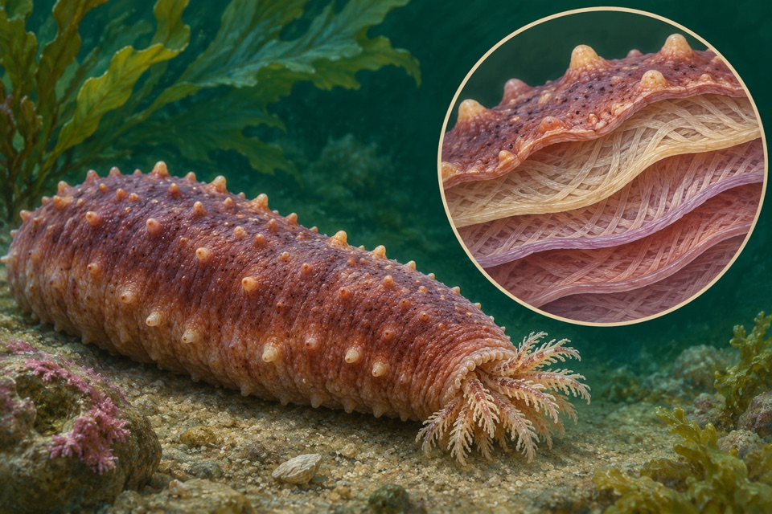

Source-system observation
Isolated tensilin bound dermal collagen fibrils and showed tissue-stiffening activity in the reported native dermal system.
The assay does not show that tensilin alone reproduces whole-animal reversible modulation.
Measure changes in dermal stiffness and collagen fibril interaction separately.
Source context. Sea cucumber Cucumaria frondosa
Targeted primary source check · Qualified human review pending

Isolated tensilin bound dermal collagen fibrils and showed tissue-stiffening activity in the reported native dermal system.
The assay does not show that tensilin alone reproduces whole-animal reversible modulation.